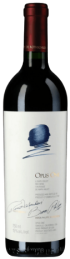
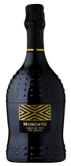
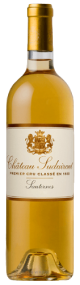
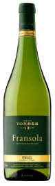
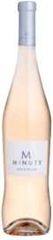
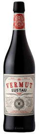

Vinoteca
Opus One 2018

Un vino tinto de aroma y cuerpo fuerte, ideal para comidas pesadas o cata.
Rovi Moscato

Vino espumante de cuerpo medio, ni tan fuerte de sabor como acido, un vino equilibrado. Ideal para aperitivos.
Chaleu Dorado

Vino de postre de gran cuerpo y dulsor que compenza lo acido. Ideal para postres de frutas o cata de quesos.
Fransola

Vino blanco de sabor seco con cierta acidez. Ideal para marisco o dietas vegetarianas.
Rose 2023

Vino rosado ligero y acido para comidad pesadas.
Vermut Rojo

Vino Fortificado o Vermut de buen cuerpo y dulzon para picadas.